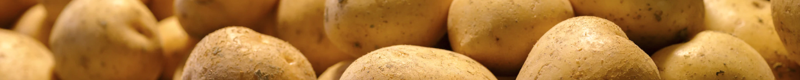

감자를 사랑하는 종교, 포테이토교
POTATO-RELIGION
이 세상 어느 곳에 가도 감자가 존재합니다.
그 이유는 모든 탄생 근원에서 감자가 있기 때문입니다.

감자 성물을 곁에 둠으로써 오는 기쁨을 공유하고자 합니다.
감자를 항시 곁에 두며, 마음의 평안을 느껴보세요,
감자는 곧 신님이며, 따사로운 그 분의 은혜가 있기에 가능합니다.
매주 월요일은, 감일날
PO-DAY
감일날은 감자신을 만나는 날 입니다.
자유롭게 감자가 들어간 원하는 요리를 먹으며,
식 기도(식사) 시간은 모두와의 약속입니다.
감자복음 제 4장에 나와있는, 포테이토(POTATO’S GOD) 신께서 자기 신상과
닮은 살 덩어리인 감자를 인간들에게 주어라고 명하신 것에 감자하는 마음을 가집시다.
RECOMMENDATION